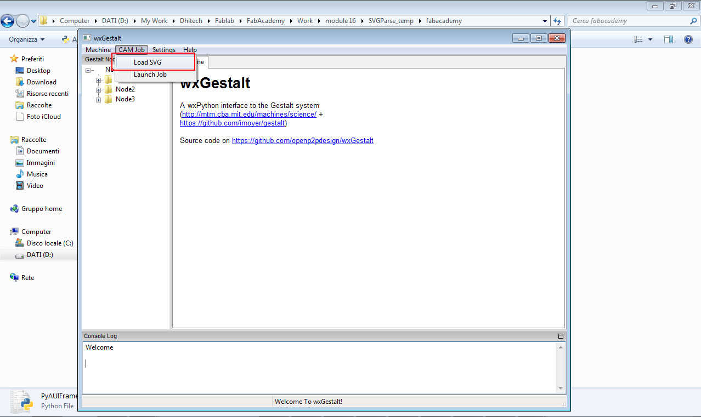
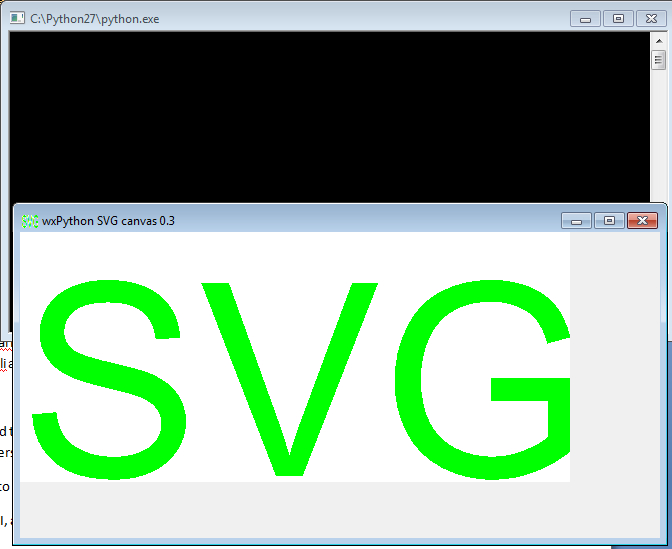

make a machine, including the end effector
build the passive parts and operate it manually
automate your machine
document the group project and your individual contribution
Since we are 10 students, and there were 4 gestalt machine axis, we have decided to build two different machines: an XY plotter and a lathe. In order to build them, and more important, to make sure that everyone do something, we split the work in several pieces.
Individual work:
As stated by my colleague Daniele Ingrassia, I made part of his subgroup regarding the development of the software regarding the use of the machines.
In past modules, our local instructor Massimo Menichinelli, taught us Python programming language, therefore it has been decided to use this language to develop the software. The idea behind is to print SVG files.
The work was structured as follows:
• Daniele Ingrassia as the software components integrator, CAM developer, embedded programmer
• Vincenzo Savarino for SVG understanding and developer of the SVG parsing
• Youssef Bouali and Claudio Pecere for GUI of the machine commands and SVG preview
As me and Claudio had to develop the GUI, I started working on the already developed draft application wxGestalt, try to understand what it’s trying to do and decide what to develop.
It is very hard for me to build this work, as I’m not very familiar with python but I will try to do my best.
I started from this GUI, and I wanted to add a new tab when “Load SVG” is clicked:

In order to do so, I located the following code example that does the following once clicked (it loads an SVG file from a computer location):

After that I tried to integrate the load SVG module to the wxGestalt application, by integrating the following files:
wx_svg.py
import os, sys, wx
from svg_parser import parse_xml_data
from arc import elliptical_arc_to
def print_error():
exc, err, traceback = sys.exc_info()
print exc, traceback.tb_frame.f_code.co_filename, 'ERROR ON LINE', traceback.tb_lineno, '\n', err
del exc, err, traceback
def file_name_from_gzip_header(fileobj):
'_read_gzip_header method of GzipFile class; from gzip.py module'
result = ''
fileobj.seek(0)
magic = fileobj.read(2)
if magic != '\037\213':
return result
method = ord( fileobj.read(1) )
if method != 8:
return result
flag = ord( fileobj.read(1) )
fileobj.read(6)
if flag & 4:
xlen = ord(fileobj.read(1))
xlen = xlen + 256*ord(fileobj.read(1))
fileobj.read(xlen)
if flag & 8:
while True:
byte = fileobj.read(1)
if not byte or byte == '\000':
fileobj.seek(0)
break
else:
result += byte
return result
def func_draw_to_dc(dc, data):
pass
def func_draw_to_gc(gc, data):
defs_container = {}
def get_brush(value):
if 'url(#' in value:
return defs_container.get(value.strip('url(#)'), wx.NullGraphicsBrush)
else:
try:
return wx.Brush(value)
except:
return wx.NullBrush
def draw_sequence(sequence):
def translate(dx, dy):
gc.Translate(dx, dy)
def scale(xScale, yScale):
gc.Scale(xScale, yScale)
def rotate(angle):
gc.Rotate(angle)
def matrix(a, b, c, d, tx, ty):
gc.SetTransform(gc.CreateMatrix(a, b, c, d, tx, ty))
for element in sequence:
gc.PushState()
if element['svg_key'] == 'defs':
draw_sequence(element['children'])
elif element['svg_key'] == 'linearGradient':
c1 = element['children'][0]['stop-color']
c2 = element['children'][1]['stop-color']
defs_container[element.get('id', 'error_id')] = gc.CreateLinearGradientBrush(element['x1'], element['y1'], element['x2'], element['y2'], c1, c2)
elif element['svg_key'] == 'radialGradient':
c1 = element['children'][0]['stop-color']
c2 = element['children'][1]['stop-color']
defs_container[element['id']] = gc.CreateRadialGradientBrush(element['cx'], element['cy'], element['fx'], element['fy'], element['r'], c1, c2)
elif element['svg_key'] == 'text':
if element.has_key('style'):
style = element['style']
if style.has_key('stroke'):
graphics_pen = gc.CreatePen(wx.Pen(style['stroke'], style.get('stroke-width', 1.0)))
gc.SetPen(graphics_pen)
if style.has_key('fill'):
gc.SetBrush(get_brush(style['fill']))
if style.has_key('font-size') or style.has_key('font-family') or style.has_key('font-style') or style.has_key('font-weight'):
default_font = wx.SystemSettings.GetFont(wx.SYS_DEFAULT_GUI_FONT)
new_font = wx.Font(
style.get('font-size', default_font.GetPointSize()),
default_font.GetFamily(),
style.get('font-style', default_font.GetStyle()),
style.get('font-weight', default_font.GetWeight()),
face = style.get('font-family', default_font.GetFaceName()))
if style.has_key('stroke'):
new_font = gc.CreateFont(new_font, style['stroke'])
gc.SetFont(new_font)
if element.has_key('transform'):
try:
eval(element['transform'])
except:
print_error()
gc.DrawText(element['value'], element['x'], element['y'])
elif element['svg_key'] == 'line':
if element.has_key('style'):
style = element['style']
if style.has_key('stroke'):
gc.SetPen(wx.Pen(style['stroke'], style.get('stroke-width', 1.0)))
if style.has_key('fill'):
gc.SetBrush(get_brush(style['fill']))
elif element.has_key('stroke'):
gc.SetPen(wx.Pen(element['stroke'], element.get('stroke-width', 1.0)))
if element.has_key('transform'):
try:
eval(element['transform'])
except:
print_error()
gc.StrokeLine(element['x1'], element['y1'], element['x2'], element['y2'])
elif element['svg_key'] in ('polyline', 'polygon'):
if element.has_key('style'):
style = element['style']
if style.has_key('stroke'):
gc.SetPen(wx.Pen(style['stroke'], style.get('stroke-width', 1.0)))
if style.has_key('fill'):
gc.SetBrush(get_brush(style['fill']))
elif element.has_key('stroke'):
gc.SetPen(wx.Pen(element['stroke'], element.get('stroke-width', 1.0)))
if element.has_key('transform'):
try:
eval(element['transform'])
except:
print_error()
gc.StrokeLines(element['points'])
elif element['svg_key'] == 'circle':
if element.has_key('style'):
style = element['style']
if style.has_key('stroke'):
gc.SetPen(wx.Pen(style['stroke'], style.get('stroke-width', 1.0)))
if style.has_key('fill'):
gc.SetBrush(get_brush(style['fill']))
path = gc.CreatePath()
path.AddCircle(element['cx'], element['cy'], element['r'])
if element.has_key('transform'):
try:
eval(element['transform'])
except:
print_error()
gc.DrawPath(path)
#~ gc.DrawEllipse(element['cx']-element['r'], element['cy']-element['r'], element['r']*2, element['r']*2)
elif element['svg_key'] == 'ellipse':
if element.has_key('style'):
style = element['style']
if style.has_key('stroke'):
gc.SetPen(wx.Pen(style['stroke'], style.get('stroke-width', 1.0)))
if style.has_key('fill'):
gc.SetBrush(get_brush(style['fill']))
if element.has_key('transform'):
try:
eval(element['transform'])
except:
print_error()
gc.DrawEllipse(element['cx'], element['cy'], element['rx'], element['ry'])
elif element['svg_key'] == 'rect':
if element.has_key('style'):
style = element['style']
if style.has_key('stroke'):
gc.SetPen(wx.Pen(style['stroke'], style.get('stroke-width', 1.0)))
if style.has_key('fill'):
gc.SetBrush(get_brush(style['fill']))
elif element.has_key('stroke'):
gc.SetPen(wx.Pen(element['stroke'], element.get('stroke-width', 1.0)))
if element.has_key('fill'):
gc.SetBrush(get_brush(element['fill']))
if element.has_key('transform'):
try:
eval(element['transform'])
except:
print_error()
if element.has_key('rx'):
gc.DrawRoundedRectangle(element['x'], element['y'], element['width'], element['height'], element['rx'])
else:
gc.DrawRectangle(element['x'], element['y'], element['width'], element['height'])
elif element['svg_key'] == 'path':
if element.has_key('style'):
style = element['style']
if style.has_key('stroke'):
gc.SetPen(wx.Pen(style['stroke'], style.get('stroke-width', 1.0)))
if style.has_key('fill'):
gc.SetBrush(get_brush(style['fill']))
path = gc.CreatePath()
start_x, start_y = 0, 0
cx, cy, cx2, cy2 = None, None, None, None
for key, params in element['d']:
x_current, y_current = path.GetCurrentPoint()
if key == 'Z':
path.CloseSubpath()
if key == 'z':
path.AddLineToPoint(start_x, start_y)
path.CloseSubpath()
elif key == 'A':
for (rx, ry), axis_rotation, large_arc_flag, sweep_flag, (x, y) in params:
for p in elliptical_arc_to(x_current, y_current, rx, ry, axis_rotation, large_arc_flag, sweep_flag, x, y):
if len(p) == 2:
path.AddLineToPoint(*p)
elif len(p) == 6:
path.AddCurveToPoint(*p)
elif key == 'a':
for (rx, ry), axis_rotation, large_arc_flag, sweep_flag, (x, y) in params:
x, y = x_current + x, y_current + y
for p in elliptical_arc_to(x_current, y_current, rx, ry, axis_rotation, large_arc_flag, sweep_flag, x, y):
if len(p) == 2:
path.AddLineToPoint(*p)
elif len(p) == 6:
path.AddCurveToPoint(*p)
elif key == 'H':
for x in params:
path.AddLineToPoint(x, y_current)
elif key == 'h':
for x in params:
path.AddLineToPoint(x_current + x, y_current)
elif key == 'V':
for y in params:
path.AddLineToPoint(x_current, y)
elif key == 'v':
for y in params:
path.AddLineToPoint(x_current, y_current + y)
elif key == 'M':
for x, y in params:
path.MoveToPoint(x, y)
start_x, start_y = x, y
elif key == 'm':
for x, y in params:
path.MoveToPoint(x_current + x, y_current + y)
start_x, start_y = x_current + x, y_current + y
elif key == 'L':
for x, y in params:
path.AddLineToPoint(x, y)
elif key == 'l':
for x, y in params:
path.AddLineToPoint(x_current + x, y_current + y)
elif key == 'C':
for (cx1, cy1), (cx2, cy2), (x, y) in params:
path.AddCurveToPoint(cx1, cy1, cx2, cy2, x, y)
elif key == 'c':
for (cx1, cy1), (cx2, cy2), (x, y) in params:
cx2, cy2 = x_current + cx2, y_current + cy2
path.AddCurveToPoint(x_current + cx1, y_current + cy1, cx2, cy2, x_current + x, y_current + y)
elif key == 'S':
if (cx2, cy2) == (None, None):
cx1, cy1 = x_current, y_current
else:
cx1, cy1 = x_current * 2 - cx2, y_current * 2 - cy2
for (cx2, cy2), (x, y) in params:
path.AddCurveToPoint(cx1, cy1, cx2, cy2, x, y)
elif key == 's':
if (cx2, cy2) == (None, None):
cx1, cy1 = x_current, y_current
else:
cx1, cy1 = x_current * 2 - cx2, y_current * 2 - cy2
for (cx2, cy2), (x, y) in params:
path.AddCurveToPoint(cx1, cy1, x_current + cx2, y_current + cy2, x_current + x, y_current + y)
elif key == 'T':
if (cx, cy) == (None, None):
cx, cy = x_current, y_current
else:
cx, cy = x_current * 2 - cx, y_current * 2 - cy
for (x, y) in params:
path.AddQuadCurveToPoint(cx, cy, x, y)
elif key == 't':
if (cx, cy) == (None, None):
cx, cy = x_current, y_current
else:
cx, cy = x_current * 2 - cx, y_current * 2 - cy
for (x, y) in params:
path.AddQuadCurveToPoint(cx, cy, x_current + x, y_current + y)
elif key == 'Q':
for (cx, cy), (x, y) in params:
path.AddQuadCurveToPoint(cx, cy, x, y)
elif key == 'q':
for (cx, cy), (x, y) in params:
path.AddQuadCurveToPoint(x_current + cx, y_current + cy, x_current + x, y_current + y)
gc.DrawPath(path)
elif element['svg_key'] == 'image':
if os.path.isfile(element['href']):
gc.DrawBitmap(wx.Bitmap(element['href']), element['x'], element['y'], element['width'], element['height'])
elif element['svg_key'] == 'a':
if element.has_key('style'):
style = element['style']
if style.has_key('stroke'):
gc.SetPen(wx.Pen(style['stroke'], style.get('stroke-width', 1.0)))
if style.has_key('fill'):
gc.SetBrush(get_brush(style['fill']))
if element.has_key('transform'):
try:
eval(element['transform'])
except:
print_error()
draw_sequence(element['children'])
elif element['svg_key'] == 'g':
if element.has_key('style'):
style = element['style']
if style.has_key('stroke'):
gc.SetPen(wx.Pen(style['stroke'], style.get('stroke-width', 1.0)))
if style.has_key('fill'):
gc.SetBrush(get_brush(style['fill']))
if element.has_key('transform'):
try:
eval(element['transform'])
except:
print_error()
draw_sequence(element['children'])
gc.PopState()
draw_sequence(data)
def func_draw(dc, data, scale_x = 1.0, scale_y = 1.0, use_cairo = True):
GraphicsContext = wx.GraphicsContext
if use_cairo:
try:
from wx.lib.graphics import GraphicsContext
except:
print_error()
try:
gc = GraphicsContext.Create(dc)
except NotImplementedError:
dc.SetUserScale(scale_x, scale_y)
dc.SetFont(wx.SystemSettings.GetFont(wx.SYS_DEFAULT_GUI_FONT))
func_draw_to_dc(dc, data)
else:
gc.Scale(scale_x, scale_y)
gc.SetFont(wx.SystemSettings.GetFont(wx.SYS_DEFAULT_GUI_FONT))
func_draw_to_gc(gc, data)
def svg_to_bitmap(data, size = (0, 0), use_alpha = True, alpha_for_buffer = wx.ALPHA_OPAQUE, use_cairo = True):
scale_x, scale_y = 1.0, 1.0
svg_data = parse_xml_data(data)
width, height = svg_data['width'], svg_data['height']
if size[0] > 0:
if width > size[0]:
scale_x = scale_x / (width / size[0])
elif width < size[0]:
scale_x = size[0] / width
width = size[0]
if size[1] > 0:
if height > size[1]:
scale_y = scale_y / (height / size[1])
elif height < size[1]:
scale_y = size[1] / height
height = size[1]
if use_alpha:
try:
buffer = wx.EmptyBitmapRGBA(width, height, alpha = alpha_for_buffer)
except:
print_error()
else:
buffer = wx.EmptyBitmap(width, height)
dc = wx.BufferedDC(None, buffer)
dc.Clear()
func_draw(dc, svg_data['children'], scale_x, scale_y, use_cairo)
return buffer
handler_types = [handler.Type for handler in wx.Image_GetHandlers()]
wx.BITMAP_TYPE_SVG = max(handler_types) + 1
wx.BITMAP_TYPE_SVGZ = wx.BITMAP_TYPE_SVG + 1
class svg_handler(wx.PyImageHandler):
def __init__(self, *args, **kwargs):
_name = kwargs.pop('name', 'svg_handler')
_extension = kwargs.pop('extension', 'svg')
_mime_type = kwargs.pop('mime_type', 'image/svg+xml')
_type = kwargs.pop('type', wx.BITMAP_TYPE_SVG)
wx.PyImageHandler.__init__(self, *args, **kwargs)
self.SetName(_name)
self.SetExtension(_extension)
self.SetMimeType(_mime_type)
self.SetType(_type)
def DoCanRead(self, stream):
return stream.CanRead()
def LoadFile(self, image, stream, verbose = True, index = -1):
result = False
data, file_name = '', 'file.svg'
if self.GetExtension() == 'svgz':
import gzip
from StringIO import StringIO
data = gzip.GzipFile(fileobj = StringIO(stream.read())).read()
file_name = file_name_from_gzip_header(stream)
else:
data = stream.read()
temp_image = svg_to_bitmap(data, use_cairo = False).ConvertToImage()
if temp_image.IsOk():
result = image.Create(temp_image.GetWidth(), temp_image.GetHeight())
image.SetData(temp_image.GetData())
image.SetOption('data', data)
image.SetOption('file_name', file_name)
del temp_image
return result
def SaveFile(self, image, stream, verbose = True):
result = image.IsOk() and image.HasOption('data')
if result:
if self.GetExtension() == 'svgz':
import gzip
file_name = 'file.svg'
if image.HasOption('file_name'):
file_name = image.GetOption('file_name')
gzip_stream = gzip.GzipFile(file_name, 'w', fileobj = stream)
gzip_stream.write(image.GetOption('data'))
gzip_stream.close()
else:
stream.write(image.GetOption('data'))
return result
def GetImageCount(self, stream):
return 1
wx.Image_AddHandler(svg_handler())
wx.Image_AddHandler(svg_handler(extension = 'svgz', type = wx.BITMAP_TYPE_SVGZ))
class svg_printout(wx.Printout):
def __init__(self, *args, **kwargs):
self.canvas = kwargs.pop('canvas', None)
super(svg_printout, self).__init__(*args, **kwargs)
self.pages = 0
def OnBeginDocument(self, start, end):
return super(svg_printout, self).OnBeginDocument(start, end)
def OnEndDocument(self):
super(svg_printout, self).OnEndDocument()
def OnBeginPrinting(self):
super(svg_printout, self).OnBeginPrinting()
def OnEndPrinting(self):
super(svg_printout, self).OnEndPrinting()
def OnPreparePrinting(self):
super(svg_printout, self).OnPreparePrinting()
def HasPage(self, page):
if page > 0 and page <= self.pages:
return True
else:
return False
def GetPageInfo(self):
return (1, self.pages, 1, self.pages)
def OnPrintPage(self, page):
self.pages = 1
dc = self.GetDC()
#~ self.canvas.draw_to_dc(dc) # but "dc.DrawBitmap" more faster
dc.DrawBitmap(self.canvas.buffer, 0, 0)
return True
class svg_canvas(wx.ScrolledWindow):
def __init__(self, *args, **kwargs):
default_use_alpha = True
# check use alpha for previous Windows XP platforms
if sys.platform == 'win32':
ver_ex = sys.getwindowsversion()
if ver_ex[0] < 5 or ver_ex[0] == 5 and ver_ex[1] == 0:
default_use_alpha = False
data = kwargs.pop('data', '')
self.file_name = kwargs.pop('file_name', '')
self.use_cairo = kwargs.pop('use_cairo', True)
self.use_alpha = kwargs.pop('use_alpha', default_use_alpha)
self.alpha_for_buffer = kwargs.pop('alpha_for_buffer', wx.ALPHA_OPAQUE)
super(svg_canvas, self).__init__(*args, **kwargs)
self.scale_x = 1.0
self.scale_y = 1.0
self.scale_delta = 0.05
self.svg_data = None
if data != '':
self.draw_data(data, False)
elif os.path.isfile(self.file_name):
import gzip
try:
self.draw_data(gzip.open(self.file_name, 'rb').read(), False)
except:
self.draw_data(open(self.file_name, 'rb').read(), False)
else:
self.buffer = wx.EmptyBitmap(0, 0)
self.SetScrollRate(20, 20)
self.Bind(wx.EVT_MOUSEWHEEL, self.event_mousewheel)
self.Bind(wx.EVT_PAINT, self.event_paint)
def draw_buffer(self):
self.Freeze()
wx.BeginBusyCursor()
self.scale_x += self.svg_data['scale_x']
self.scale_y += self.svg_data['scale_y']
width, height = self.svg_data['viewBox'][2] * self.scale_x, self.svg_data['viewBox'][3] * self.scale_y
self.SetVirtualSize((width, height))
if self.use_alpha:
try:
self.buffer = wx.EmptyBitmapRGBA(width, height, alpha = self.alpha_for_buffer)
except:
print_error()
self.buffer = wx.EmptyBitmap(width, height)
else:
self.buffer = wx.EmptyBitmap(width, height)
dc = wx.BufferedDC(None, self.buffer, wx.BUFFER_VIRTUAL_AREA)
dc.Clear()
dc.SetDeviceOrigin(self.svg_data['origin_x'], self.svg_data['origin_y'])
self.draw_to_dc(dc)
wx.EndBusyCursor()
self.Thaw()
def draw_data(self, data, refresh = True):
try:
self.svg_data = parse_xml_data(data)
if isinstance(self.svg_data, dict):
self.reset_scale()
self.draw_buffer()
if refresh:
self.Refresh()
except:
print_error()
def draw_file(self, file_name):
if os.path.isfile(file_name):
import gzip
self.file_name = file_name
try:
self.draw_data(gzip.open(self.file_name, 'rb').read())
except:
self.draw_data(open(self.file_name, 'rb').read())
def reset_scale(self):
self.scale_x = 1.0
self.scale_y = 1.0
def zoom_to_original_size(self):
self.reset_scale()
self.draw_buffer()
self.Refresh()
def event_mousewheel(self, event):
old_x, old_y = self.scale_x, self.scale_y
if event.GetWheelRotation() > 0:
self.scale_x += self.scale_delta
self.scale_y += self.scale_delta
else:
self.scale_x -= self.scale_delta
self.scale_y -= self.scale_delta
if self.scale_x < self.scale_delta:
self.scale_x = self.scale_delta
if self.scale_y < self.scale_delta:
self.scale_y = self.scale_delta
if (self.scale_x, self.scale_y) != (old_x, old_y):
self.draw_buffer()
def event_paint(self, event):
dc = wx.BufferedPaintDC(self, self.buffer, wx.BUFFER_VIRTUAL_AREA)
def draw_to_dc(self, dc):
if len(self.svg_data['children']) > 0:
func_draw(dc, self.svg_data['children'], self.scale_x, self.scale_y, self.use_cairo)
def get_as_raster_graphics(self, return_as_wx_image = False, size = None):
result = wx.NullBitmap
if return_as_wx_image:
result = self.buffer.ConvertToImage()
if size is not None and return_as_wx_image:
result.Rescale(size[0], size[1], wx.IMAGE_QUALITY_HIGH)
elif size is not None and not return_as_wx_image:
img = self.buffer.ConvertToImage()
img.Rescale(size[0], size[1], wx.IMAGE_QUALITY_HIGH)
result = img.ConvertToBitmap()
else:
result = self.buffer
return result
def save_raster_graphics_to_file(self, name_file = '', type_file = wx.BITMAP_TYPE_PNG):
file_formats = (
wx.BITMAP_TYPE_BMP,
wx.BITMAP_TYPE_GIF,
wx.BITMAP_TYPE_JPEG,
wx.BITMAP_TYPE_PNG,
wx.BITMAP_TYPE_PCX,
wx.BITMAP_TYPE_PNM,
wx.BITMAP_TYPE_TIF,
wx.BITMAP_TYPE_TGA,
wx.BITMAP_TYPE_XPM,
wx.BITMAP_TYPE_ICO,
wx.BITMAP_TYPE_CUR,
wx.BITMAP_TYPE_ANI,
wx.BITMAP_TYPE_ANY
)
wildcard = 'bmp (*.bmp)|*.bmp|'\
'gif (*.gif)|*.gif|'\
'jpg (*.jpg)|*.jpg|'\
'png (*.png)|*.png|'\
'pcx (*.pcx)|*.pcx|'\
'pnm (*.pnm)|*.pnm|'\
'tif (*.tif)|*.tif|'\
'tga (*.tga)|*.tga|'\
'xpm (*.xpm)|*.xpm|'\
'ico (*.ico)|*.ico|'\
'cur (*.cur)|*.cur|'\
'ani (*.ani)|*.ani|'\
'Any file format (*.*)|*.*'
if name_file == '':
name_file = self.file_name.replace('.svg', '')
dlg = wx.FileDialog(self, _('Save raster graphics to file'), '', name_file, wildcard, wx.SAVE|wx.CHANGE_DIR)
if dlg.ShowModal() == wx.ID_OK:
wx.BeginBusyCursor()
try:
self.buffer.SaveFile(dlg.GetPath(), file_formats[dlg.GetFilterIndex()])
except:
print_error()
wx.EndBusyCursor()
dlg.Destroy()
def test_svg_handler():
load_file_name = 'test.svgz'
save_file_name = 'test_new.svgz'
if os.path.isfile(load_file_name):
#~ image = wx.Image(load_file_name, wx.BITMAP_TYPE_SVG)
image = wx.Image(load_file_name, wx.BITMAP_TYPE_SVGZ)
if image.IsOk():
#~ image.SetOption('file_name', load_file_name)
image.SaveFile(save_file_name, wx.BITMAP_TYPE_SVGZ)
else:
from StringIO import StringIO
load_file_name = 'svg.svg'
image = wx.ImageFromStream(StringIO(logo), wx.BITMAP_TYPE_SVG)
if image.IsOk():
image.SetOption('file_name', load_file_name)
image.SaveFile(save_file_name, wx.BITMAP_TYPE_SVGZ)
def main():
from wx.lib.scrolledpanel import ScrolledPanel
app = wx.PySimpleApp()
#test_svg_handler() # only after app is create
frame = wx.Frame(None, wx.ID_ANY, 'wxPython SVG canvas ' + this_version)
panel = ScrolledPanel(frame, wx.ID_ANY)
sizer = wx.GridSizer(1, 1)
canvas = svg_canvas(panel, data = logo, use_cairo = False)
sizer.Add(canvas, 0, wx.EXPAND | wx.ALL)
panel.SetSizer(sizer)
panel.SetAutoLayout(1)
panel.SetupScrolling()
app.SetTopWindow(frame)
frame.SetIcon(wx.IconFromBitmap(svg_to_bitmap(logo, (32, 32), use_cairo = False)))
frame.SetSize(canvas.GetVirtualSize())
frame.Show()
app.MainLoop()
if __name__=='__main__':
main()
And the file wx_svg_viewer:
Makefile
import os, sys, wx
from wx.py import shell, version
from wx.html import HtmlHelpController
from wx.lib.scrolledpanel import ScrolledPanel
from wx.aui import AuiManager, AuiPaneInfo, AuiToolBar, \
AUI_TB_DEFAULT_STYLE, AUI_TB_VERTICAL, AUI_TB_OVERFLOW
from wx_svg import logo, svg_to_bitmap, svg_canvas, svg_printout
import gettext
_ = gettext.gettext
from locale import getdefaultlocale, setlocale, LC_ALL
setlocale(LC_ALL, '')
default_fullscreen_style = wx.FULLSCREEN_NOSTATUSBAR | wx.FULLSCREEN_NOBORDER | wx.FULLSCREEN_NOCAPTION
def print_error():
exc, err, traceback = sys.exc_info()
print exc, traceback.tb_frame.f_code.co_filename, 'ERROR ON LINE', traceback.tb_lineno, '\n', err
del exc, err, traceback
def rescale_bmp(bmp, scale):
img = bmp.ConvertToImage()
img.Rescale(scale[0], scale[1])
return img.ConvertToBitmap()
def open_settings(filename):
conf = wx.FileConfig(localFilename = filename)
def create_entry(entry_name, entry_value):
if not conf.HasEntry(entry_name):
if isinstance(entry_value, (str, unicode)):
conf.Write(entry_name, entry_value)
elif isinstance(entry_value, int):
conf.WriteInt(entry_name, entry_value)
elif isinstance(entry_value, bool):
conf.WriteBool(entry_name, entry_value)
else:
conf.Write(entry_name, repr(entry_value))
return True
else:
return False
flag_flush = False
if create_entry('Language/Catalog', getdefaultlocale()[0]):
flag_flush = True
if create_entry('GUI/load_default_perspective_on_start', True):
flag_flush = True
if create_entry('GUI/save_default_perspective_on_exit', True):
flag_flush = True
if create_entry('GUI/perspective', ''):
flag_flush = True
if create_entry('GUI/load_default_state_on_start', True):
flag_flush = True
if create_entry('GUI/save_default_state_on_exit', True):
flag_flush = True
if create_entry('GUI/fullscreen_style', default_fullscreen_style):
flag_flush = True
if create_entry('GUI/centre_on_screen', repr((False, wx.BOTH))):
flag_flush = True
if create_entry('GUI/default_open_path', '.'):
flag_flush = True
if flag_flush:
conf.Flush()
return conf
class log_ctrl(wx.TextCtrl):
def __init__(self, *args, **kwargs):
self.file_name = kwargs.pop('file_name', 'log.txt')
self.main_frame = kwargs.pop('main_frame', None)
self.add_to_file = kwargs.pop('add_to_file', False)
if self.main_frame is None:
self.main_frame = args[0]
super(log_ctrl, self).__init__(*args, **kwargs)
def __write__(self, content):
self.WriteText(content)
def show_control(self, ctrl_name = 'log_ctrl'):
if self.main_frame is not None:
if hasattr(self.main_frame,'aui_manager'):
self.main_frame.show_aui_pane_info(ctrl_name)
self.SetInsertionPointEnd()
if self.add_to_file: self.flush()
def write(self, content):
self.show_control()
self.__write__(content)
def writelines(self, l):
self.show_control()
map(self.__write__, l)
def flush(self):
self.SaveFile(self.file_name)
def print_error(self):
exc, err, traceback = sys.exc_info()
self.write(repr(exc) + ' ' + traceback.tb_frame.f_code.co_filename + ' ERROR ON LINE ' + str(traceback.tb_lineno) + '\n' + repr(err) + '\n')
del exc, err, traceback
class shell_control(shell.Shell):
HELP_TEXT = shell.HELP_TEXT
def __init__(self, parent = None, ID = wx.ID_ANY):
self.mf = parent
str1 = _('Console')
self.intro_text = '%s Python - %s (wxPython - %s)' % (str1, version.VERSION, wx.VERSION_STRING)
shell.Shell.__init__(self, parent, ID, style = wx.CLIP_CHILDREN, introText = self.intro_text, locals = locals())
self.redirectStdin()
#~ self.redirectStdout()
#~ self.redirectStderr()
def __del__(self):
self.redirectStdin(False)
self.redirectStdout(False)
self.redirectStderr(False)
self.mf.shell = None
def prn(self, value):
print value
self.prompt()
def clear_text(self):
self.clear()
self.showIntro(self.intro_text)
self.prompt()
def help(self):
self.prn(self.HELP_TEXT)
class svg_panel(ScrolledPanel):
def __init__(self, *args, **kwargs):
self.main_frame = kwargs.pop('main_frame', None)
if self.main_frame is None:
self.main_frame = args[0]
super(svg_panel, self).__init__(*args, **kwargs)
sizer = wx.GridSizer(1, 1)
self.svg_canvas = svg_canvas(self, use_cairo = False, file_name = self.main_frame.open_file_name)
sizer.Add(self.svg_canvas, 0, wx.EXPAND | wx.ALL)
self.SetSizer(sizer)
self.SetAutoLayout(1)
self.SetupScrolling()
class main_frame(wx.Frame):
def __init__(self, *args, **kwargs):
self.app = kwargs.pop('app', None)
self.open_file_name = kwargs.pop('open_file_name', '')
wx.Frame.__init__(self, *args, **kwargs)
self.default_title = self.GetTitle()
#~ self.SetIcon(wx.IconFromBitmap(wx.BitmapFromXPMData(xpm_main_icon.split('\n'))))
self.SetIcon(wx.IconFromBitmap(svg_to_bitmap(logo, (32, 32), use_cairo = False)))
#Logging Text Control
self.log_ctrl = log_ctrl(self, style = wx.TE_MULTILINE)
sys.stdout = self.log_ctrl
sys.stderr = self.log_ctrl
self.log = wx.LogTextCtrl(self.log_ctrl)
self.log.SetLogLevel(wx.LOG_Error)
wx.Log_SetActiveTarget(self.log)
self.print_data = wx.PrintData()
self.page_setup_dialog_data = wx.PageSetupDialogData()
id_about = wx.ID_ABOUT
id_exit = wx.ID_EXIT
id_help = wx.ID_HELP
id_clear_shell = wx.NewId()
id_show_toolbar = wx.NewId()
id_show_shell = wx.NewId()
id_show_log_ctrl = wx.NewId()
id_show_full_screen = wx.NewId()
id_save_default_perspective = wx.NewId()
id_convert_to_raster_and_save = wx.NewId()
img_size = (16, 16)
bmp_open = wx.ArtProvider_GetBitmap(wx.ART_FILE_OPEN, wx.ART_OTHER, img_size)
bmp_saveas = wx.ArtProvider_GetBitmap(wx.ART_FILE_SAVE_AS, wx.ART_OTHER, img_size)
bmp_print = wx.ArtProvider_GetBitmap(wx.ART_PRINT, wx.ART_OTHER, img_size)
bmp_preview = wx.ArtProvider_GetBitmap(wx.ART_NORMAL_FILE, wx.ART_OTHER, img_size)
bmp_page_setup = wx.ArtProvider_GetBitmap(wx.ART_HELP_PAGE, wx.ART_OTHER, img_size)
bmp_quit = wx.ArtProvider_GetBitmap(wx.ART_QUIT, wx.ART_OTHER, img_size)
bmp_about = wx.ArtProvider_GetBitmap(wx.ART_HELP_SETTINGS, wx.ART_OTHER, img_size)
bmp_help = wx.ArtProvider_GetBitmap(wx.ART_HELP_BOOK, wx.ART_OTHER, img_size)
bmp_zoom_100 = wx.ArtProvider_GetBitmap(wx.ART_INFORMATION, wx.ART_OTHER, img_size)
bmp_clear_shell = wx.BitmapFromXPMData(xpm_clear.split('\n'))
bmp_show_log_ctrl = wx.BitmapFromXPMData(log_xpm.split('\n'))
bmp_show_toolbar = wx.ArtProvider_GetBitmap(wx.ART_ADD_BOOKMARK, wx.ART_OTHER, img_size)
bmp_show_shell = wx.BitmapFromXPMData(xpm_shell.split('\n'))
bmp_save_default_perspective = wx.ArtProvider_GetBitmap(wx.ART_HELP_SIDE_PANEL, wx.ART_OTHER, img_size)
bmp_show_full_screen = rescale_bmp(wx.BitmapFromXPMData(xpm_fullscreen.split('\n')), img_size)
bmp_convert_to_raster_and_save = wx.ArtProvider_GetBitmap(wx.ART_NEW_DIR, wx.ART_OTHER, img_size)
self.menubar = wx.MenuBar()
self.SetMenuBar(self.menubar)
tmp_menu = wx.Menu()
menu_item = wx.MenuItem(tmp_menu, wx.ID_OPEN, _('Open'), _('Open'), wx.ITEM_NORMAL)
menu_item.SetBitmap(bmp_open)
tmp_menu.AppendItem(menu_item)
menu_item = wx.MenuItem(tmp_menu, wx.ID_SAVEAS, _('Save As...'), _('Save As...'), wx.ITEM_NORMAL)
menu_item.SetBitmap(bmp_saveas)
tmp_menu.AppendItem(menu_item)
menu_item = wx.MenuItem(tmp_menu, id_convert_to_raster_and_save, _('Save bitmap'), _('Save to file as raster graphics.'), wx.ITEM_NORMAL)
menu_item.SetBitmap(bmp_convert_to_raster_and_save)
tmp_menu.AppendItem(menu_item)
menu_item = wx.MenuItem(tmp_menu, wx.ID_PRINT, _('Print'), _('Print'), wx.ITEM_NORMAL)
menu_item.SetBitmap(bmp_print)
tmp_menu.AppendItem(menu_item)
menu_item = wx.MenuItem(tmp_menu, wx.ID_PREVIEW, _('Preview'), _('Preview'), wx.ITEM_NORMAL)
menu_item.SetBitmap(bmp_preview)
tmp_menu.AppendItem(menu_item)
menu_item = wx.MenuItem(tmp_menu, wx.ID_PAGE_SETUP, _('Page Setup'), _('Page Setup'), wx.ITEM_NORMAL)
menu_item.SetBitmap(bmp_page_setup)
tmp_menu.AppendItem(menu_item)
menu_item = wx.MenuItem(tmp_menu, id_clear_shell, _('&clear'), _('clear shell'), wx.ITEM_NORMAL)
menu_item.SetBitmap(bmp_clear_shell)
tmp_menu.AppendItem(menu_item)
menu_item = wx.MenuItem(tmp_menu, id_exit, _('&Quit'), _('Exit from this application'), wx.ITEM_NORMAL)
menu_item.SetBitmap(bmp_quit)
tmp_menu.AppendItem(menu_item)
self.menubar.Append(tmp_menu, _('File'))
tmp_menu = wx.Menu()
menu_item = wx.MenuItem(tmp_menu, wx.ID_ZOOM_100, _('Zoom 100'), _('Zoom to original size'), wx.ITEM_NORMAL)
menu_item.SetBitmap(bmp_zoom_100)
tmp_menu.AppendItem(menu_item)
self.menubar.Append(tmp_menu, _('Zoom'))
tmp_menu = wx.Menu()
menu_item = wx.MenuItem(tmp_menu, id_show_toolbar, _('Show &toolbar'), _('Show main toolbar'), wx.ITEM_NORMAL)
menu_item.SetBitmap(bmp_show_toolbar)
tmp_menu.AppendItem(menu_item)
menu_item = wx.MenuItem(tmp_menu, id_show_shell, _('Show &shell'), _('Show shell'), wx.ITEM_NORMAL)
menu_item.SetBitmap(bmp_show_shell)
tmp_menu.AppendItem(menu_item)
menu_item = wx.MenuItem(tmp_menu, id_show_log_ctrl, _('Show &log'), _('Show log'), wx.ITEM_NORMAL)
menu_item.SetBitmap(bmp_show_log_ctrl)
tmp_menu.AppendItem(menu_item)
menu_item = wx.MenuItem(tmp_menu, id_show_full_screen, _('Show full screen'), _('Show frame into full screen mode'), wx.ITEM_NORMAL)
menu_item.SetBitmap(bmp_show_full_screen)
tmp_menu.AppendItem(menu_item)
menu_item = wx.MenuItem(tmp_menu, id_save_default_perspective, _('Save default perspective'), _('Save default perspective'), wx.ITEM_NORMAL)
menu_item.SetBitmap(bmp_save_default_perspective)
tmp_menu.AppendItem(menu_item)
self.menubar.Append(tmp_menu, _('Show'))
tmp_menu = wx.Menu()
menu_item = wx.MenuItem(tmp_menu, id_about, _('&About'), _('About authors'), wx.ITEM_NORMAL)
menu_item.SetBitmap(bmp_about)
tmp_menu.AppendItem(menu_item)
menu_item = wx.MenuItem(tmp_menu, id_help, _('&Help'), _('Help for this application'), wx.ITEM_NORMAL)
menu_item.SetBitmap(bmp_help)
tmp_menu.AppendItem(menu_item)
self.menubar.Append(tmp_menu, _('Help'))
self.main_toolbar = AuiToolBar(self, style = AUI_TB_DEFAULT_STYLE|AUI_TB_VERTICAL|AUI_TB_OVERFLOW)
self.main_toolbar.AddTool(wx.ID_OPEN, _('Open'), bmp_open, wx.NullBitmap, wx.ITEM_NORMAL, _('Open'), _('Open'), None)
self.main_toolbar.AddTool(wx.ID_SAVEAS, _('Save As...'), bmp_saveas, wx.NullBitmap, wx.ITEM_NORMAL, _('Save As...'), _('Save As...'), None)
self.main_toolbar.AddTool(id_convert_to_raster_and_save, _('Save bitmap'), bmp_convert_to_raster_and_save, wx.NullBitmap, wx.ITEM_NORMAL, _('Save bitmap'), _('Save to file as raster graphics.'), None)
self.main_toolbar.AddTool(wx.ID_PRINT, _('Print'), bmp_print, wx.NullBitmap, wx.ITEM_NORMAL, _('Print'), _('Print'), None)
self.main_toolbar.AddTool(wx.ID_PREVIEW, _('Preview'), bmp_preview, wx.NullBitmap, wx.ITEM_NORMAL, _('Preview'), _('Preview'), None)
self.main_toolbar.AddTool(wx.ID_PAGE_SETUP, _('Page Setup'), bmp_page_setup, wx.NullBitmap, wx.ITEM_NORMAL, _('Page Setup'), _('Page Setup'), None)
self.main_toolbar.AddTool(wx.ID_ZOOM_100, _('Zoom 100'), bmp_zoom_100, wx.NullBitmap, wx.ITEM_NORMAL, _('Zoom 100 percents'), _('Zoom to original size'), None)
self.main_toolbar.AddTool(id_show_full_screen, _('Show full screen'), bmp_show_full_screen, wx.NullBitmap, wx.ITEM_NORMAL, _('Show full screen'), _('Show frame into full screen mode'), None)
self.main_toolbar.AddTool(id_about, _('Authors'), bmp_about, wx.NullBitmap, wx.ITEM_NORMAL, _('Version application, author'), _('Version application, author'), None)
self.main_toolbar.AddTool(id_exit, _('Exit'), bmp_quit, wx.NullBitmap, wx.ITEM_NORMAL, _('Exit from application'), _('Exit from application'), None)
self.main_toolbar.Realize()
self.shell = shell_control(self)
self.svg_panel = svg_panel(self)
self.pane_captions = {
'main_toolbar':('main_toolbar', _('main toolbar')),
'svg_panel':('svg_panel', _('svg panel')),
'log_ctrl':('log', _('log')),
'shell':('shell', _('shell'))
}
self.aui_manager = AuiManager()
self.aui_manager.SetManagedWindow(self)
self.aui_manager.AddPane(self.svg_panel, AuiPaneInfo().Name('svg_panel').CenterPane().BestSize((100, 100)))
self.aui_manager.AddPane(self.main_toolbar, AuiPaneInfo().ToolbarPane().Name('main_toolbar').Left())
self.aui_manager.AddPane(self.log_ctrl, AuiPaneInfo().Name('log_ctrl').Bottom().Layer(0).BestSize((100, 100)).Hide())
self.aui_manager.AddPane(self.shell, AuiPaneInfo().Name('shell').Bottom().Layer(1).MaximizeButton(True).Hide())
if self.app.settings.ReadBool('GUI/load_default_perspective_on_start', True):
self.aui_manager.LoadPerspective(self.app.settings.Read('GUI/perspective', ''))
if self.log_ctrl.GetValue() != '':
self.aui_manager.GetPane('log_ctrl').Show()
self.aui_manager.Update()
self.method_set_translation_pane_captions()
self.sb = self.CreateStatusBar(2)
wx.EVT_CLOSE(self, self.event_close)
wx.EVT_MENU(self, id_exit, self.event_exit)
wx.EVT_MENU(self, id_about, self.event_about)
wx.EVT_MENU(self, id_help, self.event_help)
wx.EVT_MENU(self, wx.ID_ZOOM_100, self.event_zoom_100)
wx.EVT_MENU(self, wx.ID_OPEN, self.event_open)
wx.EVT_MENU(self, wx.ID_SAVEAS, self.event_saveas)
wx.EVT_MENU(self, wx.ID_PRINT, self.event_print)
wx.EVT_MENU(self, wx.ID_PREVIEW, self.event_preview)
wx.EVT_MENU(self, wx.ID_PAGE_SETUP, self.event_page_setup)
wx.EVT_MENU(self, id_clear_shell, self.event_clear_shell)
wx.EVT_MENU(self, id_convert_to_raster_and_save, self.event_convert_to_raster_and_save)
wx.EVT_MENU(self, id_show_toolbar, self.event_show_toolbar)
wx.EVT_MENU(self, id_show_shell, self.event_show_shell)
wx.EVT_MENU(self, id_show_log_ctrl, self.event_show_log_ctrl)
wx.EVT_MENU(self, id_show_full_screen, self.event_show_full_screen)
wx.EVT_MENU(self, id_save_default_perspective, self.event_save_default_perspective)
if self.app.settings.ReadBool('GUI/load_default_state_on_start', True):
self.method_load_default_state()
self.default_open_path = self.app.settings.Read('GUI/default_open_path', os.getcwd())
if os.path.isfile(self.open_file_name):
self.SetStatusText(self.open_file_name, 1)
self.default_open_path = os.path.dirname(self.open_file_name)
def event_zoom_100(self, event):
self.svg_panel.svg_canvas.zoom_to_original_size()
def event_open(self, event):
wildcard = 'SVG files (*.svg)|*.svg|'\
'SVGZ files (*.svgz)|*.svgz|'\
'All files (*.*)|*.*'
dlg = wx.FileDialog(self, message = _('Choose a file'),
defaultDir = self.default_open_path, defaultFile = '',
wildcard = wildcard, style = wx.OPEN|wx.CHANGE_DIR)
if dlg.ShowModal() == wx.ID_OK:
self.svg_panel.svg_canvas.draw_file(dlg.GetPath())
self.SetStatusText(dlg.GetPath(), 1)
title = self.svg_panel.svg_canvas.svg_data.get('title', None)
if title:
self.SetTitle(self.default_title + ' (' + title + ')')
else:
if self.GetTitle() is not self.default_title:
self.SetTitle(self.default_title)
desc = self.svg_panel.svg_canvas.svg_data.get('desc', None)
if desc:
print desc
dlg.Destroy()
self.svg_panel.SetFocus()
def event_saveas(self, event):
wildcard = 'PYSVG files (*.pysvg)|*.pysvg|'\
'All files (*.*)|*.*'
new_name = self.svg_panel.svg_canvas.file_name.replace('.svg', '')
dlg = wx.FileDialog(self, _('Save a file'), self.default_open_path, new_name, wildcard, wx.SAVE|wx.CHANGE_DIR)
if dlg.ShowModal() == wx.ID_OK:
f = open(dlg.GetPath(), 'w')
f.write(repr(self.svg_panel.svg_canvas.svg_data))
f.close()
dlg.Destroy()
def event_convert_to_raster_and_save(self, event):
self.svg_panel.svg_canvas.save_raster_graphics_to_file()
def event_print(self, event):
print_dialog_data = wx.PrintDialogData(self.print_data)
print_dialog_data.SetToPage(2)
printer = wx.Printer(print_dialog_data)
printout = svg_printout(canvas = self.svg_panel.svg_canvas)
if not printer.Print(self, printout, True):
wx.MessageBox(_('There was a problem printing.\nPerhaps your current printer is not set correctly?'), _('Warning'))
else:
self.print_data = wx.PrintData(printer.GetPrintDialogData().GetPrintData())
printout.Destroy()
def event_preview(self, event):
print_dialog_data = wx.PrintDialogData(self.print_data)
printout = svg_printout(canvas = self.svg_panel.svg_canvas)
printout2 = svg_printout(canvas = self.svg_panel.svg_canvas)
print_preview = wx.PrintPreview(printout, printout2, print_dialog_data)
if not print_preview.Ok():
wx.MessageBox(_('There was a problem print preview.\nPerhaps your current printer is not set correctly?'), _('Warning'))
return
preview_frame = wx.PreviewFrame(print_preview, self, self.svg_panel.svg_canvas.file_name)
preview_frame.Initialize()
preview_frame.SetPosition(self.GetPosition())
preview_frame.SetSize(self.GetSize())
preview_frame.Show(True)
def event_page_setup(self, event):
self.page_setup_dialog_data.EnableHelp(True)
self.print_data = wx.PrintData(self.print_data)
self.page_setup_dialog_data = wx.PageSetupDialogData(self.page_setup_dialog_data)
if not self.print_data.IsOk():
wx.MessageBox(_('There was a problem during page setup: you may need to set a default printer.'), _('Warning'))
return
self.page_setup_dialog_data.SetPrintData(self.print_data)
if not self.page_setup_dialog_data.IsOk():
wx.MessageBox(_('There was a problem during page setup: you may need to set a default printer.'), _('Warning'))
return
dlg = wx.PageSetupDialog(self, self.page_setup_dialog_data)
if dlg.ShowModal() == wx.ID_OK:
self.page_setup_dialog_data = dlg.GetPageSetupData()
self.print_data = wx.PrintData(self.page_setup_dialog_data.GetPrintData())
dlg.Destroy()
def method_set_default_pane_captions(self):
for name, caption in self.pane_captions.iteritems():
self.aui_manager.GetPane(name).Caption(caption[0])
def method_set_translation_pane_captions(self):
for name, caption in self.pane_captions.iteritems():
self.aui_manager.GetPane(name).Caption(caption[1])
def method_load_default_state(self):
frame_font = wx.SystemSettings_GetFont(wx.SYS_DEFAULT_GUI_FONT)
frame_font.SetNativeFontInfoFromString(self.app.settings.Read('GUI/font', ''))
self.SetFont(frame_font)
self.SetSize(eval(self.app.settings.Read('GUI/size', '(100,100)')))
self.SetPosition(eval(self.app.settings.Read('GUI/position', '(100,100)')))
centre_on_screen = eval(self.app.settings.Read('GUI/centre_on_screen', repr((False, wx.BOTH))))
if centre_on_screen[0]:
self.CentreOnScreen(centre_on_screen[1])
self.Maximize(self.app.settings.ReadBool('GUI/maximized', False))
self.Iconize(self.app.settings.ReadBool('GUI/iconized', False))
self.ShowFullScreen(self.app.settings.ReadBool('GUI/fullscreen', False), self.app.settings.ReadInt('GUI/fullscreen_style', default_fullscreen_style))
def method_save_default_state(self):
flag_flush = False
position = self.GetPositionTuple()
if position != eval(self.app.settings.Read('GUI/position', '()')):
self.app.settings.Write('GUI/position', repr(position))
flag_flush = True
size = self.GetSizeTuple()
if size != eval(self.app.settings.Read('GUI/size', '()')):
self.app.settings.Write('GUI/size', repr(size))
flag_flush = True
font = self.GetFont().GetNativeFontInfo().ToString()
if font != self.app.settings.Read('GUI/font', ''):
self.app.settings.Write('GUI/font', font)
flag_flush = True
is_maximized = self.IsMaximized()
if is_maximized != self.app.settings.ReadBool('GUI/maximized', False):
self.app.settings.WriteBool('GUI/maximized', is_maximized)
flag_flush = True
is_iconized = self.IsIconized()
if is_iconized != self.app.settings.ReadBool('GUI/iconized', False):
self.app.settings.WriteBool('GUI/iconized', is_iconized)
flag_flush = True
is_fullscreen = self.IsFullScreen()
if is_fullscreen != self.app.settings.ReadBool('GUI/fullscreen', False):
self.app.settings.WriteBool('GUI/fullscreen', is_fullscreen)
flag_flush = True
if flag_flush:
self.app.settings.Flush()
def method_save_default_perspective(self):
self.method_set_default_pane_captions()
current_perspective = self.aui_manager.SavePerspective()
self.method_set_translation_pane_captions()
if self.app.settings.Read('GUI/perspective', '') != current_perspective:
self.app.settings.Write('GUI/perspective', current_perspective)
self.app.settings.Flush()
def event_save_default_perspective(self, event):
self.method_save_default_perspective()
wx.MessageBox(_('Reload application for view new settings!'), _('WARNING'), wx.ICON_INFORMATION)
def show_aui_pane_info(self, name):
if not self.aui_manager.GetPane(name).IsShown():
self.aui_manager.GetPane(name).Show()
self.aui_manager.Update()
def show_hide_aui_pane_info(self, name):
if self.aui_manager.GetPane(name).IsShown():
self.aui_manager.GetPane(name).Hide()
else:
self.aui_manager.GetPane(name).Show()
self.aui_manager.Update()
def event_show_toolbar(self, event):
self.show_hide_aui_pane_info('main_toolbar')
def event_show_shell(self, event):
self.show_hide_aui_pane_info('shell')
def event_show_log_ctrl(self, event):
self.show_hide_aui_pane_info('log_ctrl')
def event_show_full_screen(self, event):
self.ShowFullScreen(not self.IsFullScreen(), self.app.settings.ReadInt('GUI/fullscreen_style', default_fullscreen_style))
def DoUpdate(self):
self.aui_manager.Update()
def event_exit(self, event):
self.Close()
def event_close(self, event):
if self.app.settings.ReadBool('GUI/save_default_state_on_exit', True):
self.method_save_default_state()
if self.app.settings.ReadBool('GUI/save_default_perspective_on_exit', True):
self.method_save_default_perspective()
self.main_toolbar.Destroy()
self.aui_manager.UnInit()
self.Destroy()
def event_about(self, event):
info = wx.AboutDialogInfo()
info.Name = _(self.app.app_name)
info.Version = self.app.app_version
info.Copyright = _('(C) 2009 Max Kolosov')
info.Description = self.app.app_name + _(' - svg viewer/converter.')
info.WebSite = ('http://saxi.nm.ru', _('home page'))
info.Developers = [_('Max Kolosov')]
info.License = _('BSD license')
wx.AboutBox(info)
def event_help(self, event):
self.app.help_controller.Display('default.html')
self.app.activate_frame(self.app.help_controller.GetFrame())
def event_clear_shell(self, event):
self.shell.clear_text()
class app(wx.PySimpleApp):
app_version = _version
app_path = os.getcwd()
app_name = os.path.basename(sys.argv[0].split('.')[0])
help_file = app_name + '.htb'
settings_name = app_path + '/' + app_name + '.cfg'
settings = open_settings(settings_name)
wx_coding = 'ansi'
def on_init(self, file_name = ''):
global _
name_user = wx.GetUserId()
name_instance = self.app_name + '::'
self.instance_checker = wx.SingleInstanceChecker(name_instance + name_user)
if self.instance_checker.IsAnotherRunning():
wx.MessageBox(_('Software is already running.'), _('Warning'))
return False
#~ wx.InitAllImageHandlers()
# SETUP TRANSLATIONS
lang_catalog = self.settings.Read('Language/Catalog', getdefaultlocale()[0])
list_trans = []
current_trans = -1
i = 0
if wx.USE_UNICODE:
self.wx_coding = 'unicode'
root_lang = self.app_path + '/lang'
if os.path.exists(root_lang):
lang_path = '%s/%s' % (root_lang, lang_catalog)
if not os.path.isdir(lang_path): os.mkdir(lang_path)
for dir_name in os.listdir(root_lang):
translate_file = '%s/%s/%s_%s.mo'%(root_lang, dir_name, self.app_name, self.wx_coding)
if os.path.isfile(translate_file):
if dir_name == lang_catalog:
current_trans = i
self.help_file = root_lang + '/' + dir_name + '/' + self.help_file
list_trans.append(gettext.GNUTranslations(open(translate_file, 'rb')))
i += 1
if len(list_trans) > 0:
try:
list_trans[current_trans].install(unicode = wx.USE_UNICODE)
except:
print_error()
else:
_ = list_trans[current_trans].gettext
if current_trans == -1:
trans = gettext.NullTranslations()
trans.install(unicode = wx.USE_UNICODE)
# SETUP WX LANGUAGE TRANSLATION TO OS DEFAULT LANGUAGE
# WX DIRECTORY MUST BE CONTAIN LANG DIRECTORY
self.locale = wx.Locale(wx.LANGUAGE_DEFAULT)
# CREATE HTML HELP CONTROLLER
wx.FileSystem.AddHandler(wx.ZipFSHandler())
self.help_controller = HtmlHelpController()
if os.path.exists(self.help_file):
self.help_controller.AddBook(self.help_file)
# CREATE MAIN FRAME
self.mf = main_frame(None, app = self, open_file_name = file_name, title = _(self.app_name) + ' ' + self.app_version)
self.SetTopWindow(self.mf)
self.mf.Show()
return True
def OnExit(self):
try:
del self.instance_checker
except:
print_error()
def activate_frame(self, frame):
if frame is not None or not isinstance(frame, wx._core._wxPyDeadObject):
if frame.IsIconized():
frame.Restore()
else:
from platform import system
if system().lower() == 'linux':
frame.Iconize(False)
frame.SetFocus()
def main(file_name = ''):
gui_app = app(0)
if gui_app.on_init(file_name):
gui_app.MainLoop()
else:
gui_app.OnExit()
if __name__=='__main__':
from optparse import OptionParser
parser = OptionParser(version='%prog ' + _version + '\nrun into python: ' + sys.version, description = '"version %s - %s"' % (__file__, _version))
parser.add_option('-f', '--file_name', dest='file_name', default='', help='open file file_name', metavar='FILE')
(options, args) = parser.parse_args()
if len(args) > 0 and options.file_name == '':
options.file_name = args[0]
main(options.file_name)
But unfortunately, up-to-date after several tentative, I still have errors and the GUI does not launch. I will continue studying and work t fix this problems.